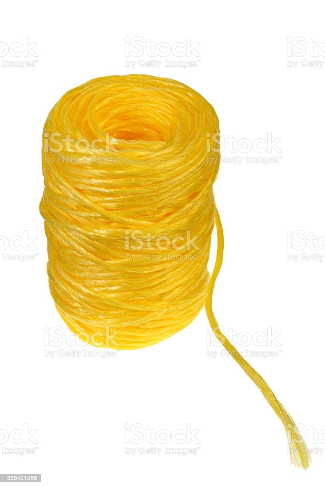

SOBRE
NOSOTROS
7 Balles Textil es una empresa dedicada a la fabricacion de hilos y sogas de polipropileno,
actualmente nuestra instalacion fabril se encuentra en la localidad de Labordeboy, Santa Fe.
Nos especializamos en la fabricacion de sogas de alta tenacidad utilizadas en la nautica,
ferreterias y en confeccion de coberturas para el transporte y el agro en general.
